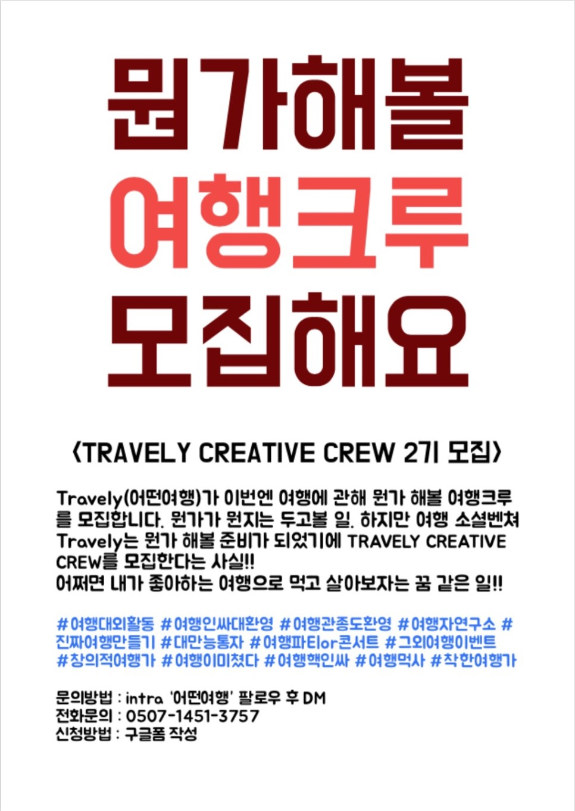

혹시.... 기다려 주셨나요?? . 1기의 열기가 아직 식지 않은 지금 ‘어떤여행’에서 이번엔 #뭔가해볼 Travely Creative Crew를 모집합니다.
많이 고민했습니다. 여행을 좋아하는 사람들을 위해 무엇이 더 필요할지를요.
부산의 유일한 여행자공간 ‘어떤여행’에서 여행을 좋아하는 사람들이 함께 모여 무엇이든 할 수 있도록 만들어 보고자 합니다. . 나와 같은 여행지를 좋아하는 여행자, 나와 같은 여행방식을 가진 여행자, 나와 조금 다르지만, 어쩌면 달라서 함께 하고픈 여행자, 나의 여행을 함께 공감하고 나눌 수 있는 여행자.
달달 여행 (Feat.갬성)